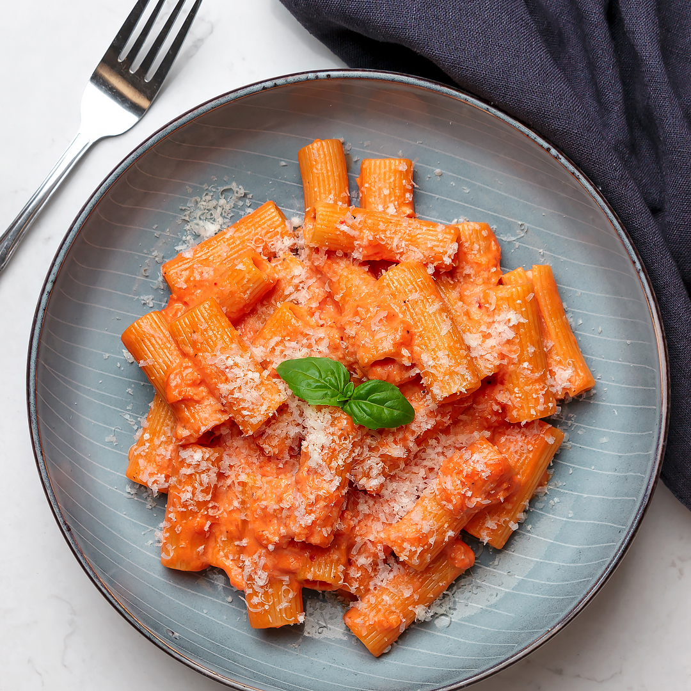

Spicy Pasta

Description
It's super easy to make but tastes like so much effort went into it.
Ingredients
- 16 ounces rigatoni pasta or penne
- 1/2 cup extra virgin olive oil
- 1 tablespoon fresh garlic finely minced
- 2/3 cup tomato paste
- 1 1/3 cup heavy cream
- 2 teaspoons red pepper flakes or to taste
- 2 teaspoons dried basil
- salt and pepper to taste
- 1/2 cup freshly grated parmesan more to taste
- 2 tablespoons unsalted butter
- pasta water
- optional garnishes: finely chopped parsley and red pepper flakes
Instructions
- Bring a large pot of salted water to a boil. Throw in the pasta and cook according to package directions. Reserve at least 1 cup of pasta water and then drain.
- In a saucepan, add the olive oil over medium heat. Add the garlic and tomato paste and cook for about 4 to 5 minutes. The tomato paste will darken in color from a bright red to reddish brown. This process removes acidity from the tomato paste.
- Add heavy cream and mix until incorporated. Simmer for about 2 to 3 minutes.
- Add the red pepper flakes, dried basil, salt, and black pepper to taste. Mix again.
- Add the grated parmesan, butter, and 1/2 a cup pasta water. Mix until the sauce is smooth and creamy. If you think it needs more pasta water, you can add but 1/2 a cup is perfect for me.
- Toss in the cooked pasta and mix to coat evenly. Optional, top it off with more grated parm, chopped parsley, and chili flakes.